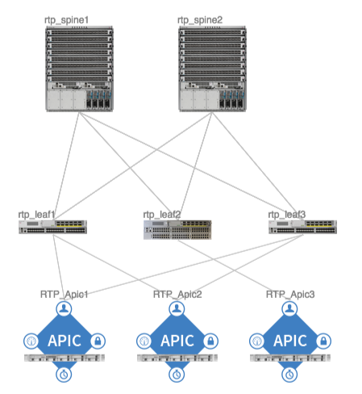

Fabric Initialization¶
Overview¶
This chapter covers the discovery process for an ACI fabric, beginning with an overview of the actions that happen and the verification steps used to confirm that a functioning fabric exists. The displays have been captured from our reference topology working fabric and can be used as an aid in troubleshooting issues where fabric nodes fail to join the fabric.
In this discovery process, a fabric node is considered active when the APIC and node can exchange heartbeats through the Intra-Fabric Messaging (IFM) process. The IFM process is also used by the APIC to push policy to the fabric leaf nodes.
Fabric discovery happens in three stages. The leaf node directly connected to the APIC is discovered in the first stage. The second stage of discovery brings in the spines connected to that initial seed leaf. Then the third stage processes the discovery of the other leaf nodes and APICs in the cluster.
The diagram below illustrates the discovery process for switches that are directly connected to the APIC. Coverage of specific verification for other parts of the process will be presented later in the chapter.
The steps are:
- Link Layer Discovery Protocol (LLDP) Neighbor Discovery
- Tunnel End Point (TEP) IP address assignment to the node
- Node software upgraded if necessary
- Policy Element IFM Setup
{kind=link}
Node status may fluctuate between several states during the fabric registration process. The states are shown in the Fabric Node Vector table. The APIC CLI command to show the Fabric Node Vector table acidiag fnvread and sample output will be shown further down in this section.Below is a description of each state.
States and descriptions:
- Unknown – Node discovered but no Node ID policy configured
- Undiscovered – Node ID configured but not yet discovered
- Discovering – Node discovered but IP not yet assigned
- Unsupported – Node is not a supported model
- Disabled – Node has been decommissioned
- Inactive – No IP connectivity
- Active – Node is active
During fabric registration and initialization a port might transition to an “out-of-service” state. Once a port has transitioned to an out-of-service status, only DHCP and CDP/LLDP protocols are allowed to be transmitted. Below is a description of each out-of-service issue that may be encountered:
- fabric-domain-mismatch – Adjacent node belongs to a different fabric
- ctrlr-uuid-mismatch – APIC UUID mismatch (duplicate APIC ID)
- wiring-mismatch – Invalid connection (Leaf to Leaf, Spine to non-leaf, Leaf fabric port to non-spine etc.)
- adjaceny-not-detected – No LLDP adjacency on fabric port
Ports can go out-of-service due to wiring issues. Wiring Issues get reported through the lldpIf object information on this object can be browsed at the following object location in the MIT: /mit/sys/lldp/inst/if-[eth1/1]/summary.
Fabric Verification¶
This section illustrates some displays from the reference topology configured and in full working order.
{kind=link}
The first step is to verify LLDP neighborships information has been exchanged. To verify LLDP information exchange, the command show lldp neighbors can be used. This command can be run on the APIC and executed on the nodes, or it can be run directly on the fabric nodes. The APIC runs Linux using a bash-based shell, that is not sensitive to the question mark, as is typical for IOS or NX-OS shells. In order to see all the command options, the APIC requires the entry of a special control sequence sent by pressing the escape key twice. This double escape sequence is the equivalent of the NXOS/IOS contextual help function triggered when the question mark ”?” is typed in the CLI. For example, the output below shows the result of typing show lldp neighbors <esc> <esc>:
admin@RTP_Apic1:~> <b>show lldp neighbors</b>
node Fabric node
rtp_leaf1 Specify Fabric Node Name
rtp_leaf2 Specify Fabric Node Name
rtp_leaf3 Specify Fabric Node Name
rtp_spine1 Specify Fabric Node Name
rtp_spine2 Specify Fabric Node Name
Based on the option provided in the contextual help output above, now extending the command to show lldp neighbors node produces the following output:
admin@RTP_Apic1:~> show lldp neighbors node
101 Specify Fabric Node id
102 Specify Fabric Node id
103 Specify Fabric Node id
201 Specify Fabric Node id
202 Specify Fabric Node id
Executing the command show lldp neighbors rtp_leaf1 in the APIC CLI displays all the LLDP Neighbors adjacent to “rtp_leaf1”. The output shows that this leaf is connected to two different APICs and two spines.
admin@RTP_Apic1:~> show lldp neighbors rtp_leaf1
# Executing command: 'cat /aci/fabric/inventory/pod-1/rtp_leaf1/protocols/lldp/neighbors/summary'
neighbors:
device-id local-interface hold-time capability port-id
-------------- --------------- --------- ------------- -----------------
RTP_Apic1 eth1/1 120 90:e2:ba:4b:fc:78
RTP_Apic2 eth1/2 120 90:e2:ba:5a:9f:30
rtp_spine1 eth1/49 120 bridge,router Eth3/1
rtp_spine2 eth1/50 120 bridge,router Eth4/1
This command may also be run directly on the leaf as shown below:
rtp_leaf1# show lldp neighbors
Capability codes:
(R) Router, (B) Bridge, (T) Telephone, (C) DOCSIS Cable Device
(W) WLAN Access Point, (P) Repeater, (S) Station, (O) Other
Device ID Local Intf Hold-time Capability Port ID
RTP_Apic1 Eth1/1 120 90:e2:ba:4b:fc:78
RTP_Apic2 Eth1/2 120 90:e2:ba:5a:9f:30
rtp_spine1 Eth1/49 120 BR Eth3/1
rtp_spine2 Eth1/50 120 BR Eth4/1
When the command acidiag fnvread is run in the APIC CLI, it can be used to verify the Fabric Node Vector (FNV) that is exchanged using LLDP. This is the quickest way to determine if each node is active, and a TEP address has been assigned.
admin@RTP_Apic1:~> acidiag fnvread
ID Name Serial Number IP Address Role State LastUpdMsgId
-------------------------------------------------------------------------------------------------
101 rtp_leaf1 SAL1819SAN6 172.16.136.95/32 leaf active 0
102 rtp_leaf2 SAL172682S0 172.16.136.91/32 leaf active 0
103 rtp_leaf3 SAL1802KLJF 172.16.136.92/32 leaf active 0
201 rtp_spine1 FGE173400H2 172.16.136.93/32 spine active 0
202 rtp_spine2 FGE173400H7 172.16.136.94/32 spine active 0
Total 5 nodes
When the command acidiag avread is run in the APIC CLI, it can be used to verify the Appliance Vector (AV) that is exchanged using LLDP. This is the best way to determine the APICs are all part of one clustered fabric. This command also helps to verify that the TEP address is assigned, the appliance is commissioned, registered, and active, and the health is equal to 255 which signifies the appliance is “fully fit”.
admin@RTP_Apic1:~> acidiag avread
Local appliance ID=1 ADDRESS=172.16.0.1 TEP ADDRESS=172.16.0.0/16 CHASSIS_ID=a5945f3c-53c8-11e4-bde2-ebe6f6cfeb58
Cluster of 3 lm(t):1(2014-10-14T20:04:46.691+00:00) appliances (out of targeted 3 lm(t):3(2014-10-14T20:05:22.567+00:00)) with FABRIC_DOMAIN name=RTP_Fabric set to version=1.0(1k) lm(t):3(2014-10-14T20:05:23.486+00:00)
appliance id=1 last mutated at 2014-10-14T17:36:51.734+00:00 address=172.16.0.1 tep address=172.16.0.0/16 oob address=10.122.254.211/24 version=1.0(1k) lm(t):1(2014-10-14T20:12:28.291+00:00) chassisId=a5945f3c-53c8-11e4-bde2-ebe6f6cfeb58 lm(t):1(2014-10-14T20:12:28.291+00:00) commissioned=1 registered=1 active=yes(zeroTime) health=(applnc:255 lm(t):1(2014-10-14T20:13:30.052+00:00) svc's)
appliance id=2 last mutated at 2014-10-14T19:55:24.356+00:00 address=172.16.0.2 tep address=172.16.0.0/16 oob address=10.122.254.212/24 version=1.0(1k) lm(t):2(2014-10-14T20:12:28.571+00:00) chassisId=f56e0130-53db-11e4-ba9f-83158a2b73fa lm(t):2(2014-10-14T20:12:28.571+00:00) commissioned=1 registered=1 active=yes(2014-10-14T19:55:24.357+00:00) health=(applnc:255 lm(t):2(2014-10-14T20:13:30.084+00:00) svc's)
appliance id=3 last mutated at 2014-10-14T20:04:46.922+00:00 address=172.16.0.3 tep address=172.16.0.0/16 oob address=10.122.254.213/24 version=1.0(1k) lm(t):3(2014-10-14T20:12:28.493+00:00) chassisId=2e7f7a70-53dd-11e4-a8f2-5d5876c67adc lm(t):3(2014-10-14T20:12:28.493+00:00) commissioned=1 registered=1 active=yes(2014-10-14T20:12:28.179+00:00) health=(applnc:255 lm(t):3(2014-10-14T20:13:29.757+00:00) svc's)
clusterTime=<diff=0 common=2014-10-14T20:24:47.810+00:00 local=2014-10-14T20:24:47.810+00:00 pF=<displForm=0 offsSt=0 offsVlu=0 lm(t):3(2014-10-14T20:05:23.096+00:00)>>
This same information can also be verified using the ACI GUI. The capture below shows the APIC cluster health screen.
{kind=link}
The capture below displays the overall fabric topology. When fully discovered, each node should be visible under the Pod1 folder.
{kind=link}
Problem Description¶
During fabric discovery, issues may be encountered when a leaf or spine does not join the ACI fabric due to issues that were mentioned in the overview section of this chapter.
Verification¶
- Check the power status of switches and ensure they are powered on. Use the locator LED to identify if each switch is in a healthy state.
- Check the cabling between switches. Example: Leaf should only be connected to Spine and APIC. Spine should only be connected to Leaves.
- Use console cables to access the device, verify if the device is in loader>
prompt or (none) prompt.
- When using the console connection, if the device displays the loader> prompt, the switch is in a state where it did not load the ACI switch software image. Please refer to the ‘ACI Fabric Node and Process Crash Troubleshooting’ chapter of this document that explains how to recover from the loader prompt.
- When using the console connection, if the device displays the (none) login: prompt, enter “admin” then hit the Enter key to access the CLI. The following message should appear on the screen:
User Access Verification
(none) login: admin
********************************************************************************
Fabric discovery in progress, show commands are not fully functional
Logout and Login after discovery to continue to use show commands.
********************************************************************************
(none)#
Use the command show lldp neighbor to verify if the Leaf is connected to the spine or APIC. If this is a spine, it should be connected to the leaves.
(none)# show lldp neighbor
Capability codes:
(R) Router, (B) Bridge, (T) Telephone, (C) DOCSIS Cable Device
(W) WLAN Access Point, (P) Repeater, (S) Station, (O) Other
Device ID Local Intf Hold-time Capability Port ID
RTP_Apic1 Eth1/1 120 90:e2:ba:4b:fc:78
...
switch Eth1/49 120 BR Eth3/1
switch Eth1/50 120 BR Eth4/1
Total entries displayed: 14
If presented with the (none)# prompt, use the command show interface brief to verify what the status the interfaces are in.
(none)# show interface brief
--------------------------------------------------------------------------------
Port VRF Status IP Address Speed MTU
--------------------------------------------------------------------------------
mgmt0 -- up 1000 9000
--------------------------------------------------------------------------------
Ethernet VLAN Type Mode Status Reason Speed Port
Interface Ch #
--------------------------------------------------------------------------------
Eth1/1 0 eth trunk up out-of-service 10G(D) --
...
Eth1/47 0 eth trunk down sfp-missing 10G(D) --
Eth1/48 0 eth trunk up out-of-service 10G(D) --
Eth1/49 -- eth routed up none 40G(D) --
Eth1/49.1 2 eth routed up none 40G(D) --
Eth1/50 -- eth routed up none 40G(D) --
Eth1/50.2 2 eth routed up none 40G(D) --
...
Alternatively, this information can also be found with the command cat /mit/sys/lldp/inst/if-[eth1–<PORT NUMBER>]/summary in the (none)# prompt to verify if there is any wiring issue:
(none)# cat /mit/sys/lldp/inst/if-\[eth1--60\]/summary
# LLDP Interface
id : eth1/60
adminRxSt : enabled
adminSt : enabled
adminTxSt : enabled
childAction :
descr :
dn : sys/lldp/inst/if-[eth1/60]
lcOwn : local
mac : 7C:69:F6:0F:EA:EF
modTs : 2014-10-13T20:44:37.182+00:00
monPolDn : uni/fabric/monfab-default
name :
operRxSt : enabled
operTxSt : enabled
portDesc : topology/pod-1/paths-0/pathep-[eth1/60]
portVlan : unspecified
rn : if-[eth1/60]
status :
sysDesc :
wiringIssues :
Symptom 2¶
In the Fabric membership, no TEP IP addresses are assigned to either leaf or sprine switch, and the node has a status of “unsupported” and a role of ”unknown” listed under fabric membership.
Verification¶
If the switch has “unsupported” for its state, the device model (part number) is not supported by the current APIC version. The command “acidiag fnvread” in the APIC CLI will help to verify all nodes in the fabric.
admin@RTP_Apic1:~> acidiag fnvread
ID Name Serial Number IP Address Role State LastUpdMsgId
-------------------------------------------------------------------------------------------------
0 SAL12341234 0.0.0.0 unknown unsupported 0
(none)# cat /mit/uni/fabric/compcat-default/swhw-*/summary | grep model
model : N9K-C9336PQ
model : N9K-C9508
model : N9K-C9396PX
model : N9K-C93128TX
(none)#
Resolution¶
The device model or part number must match the catalog’s supported hardware. The command grep model /mit/uni/fabric/compcat-default/swhw-*/summary in the switch can be used to verify the catalog’s supported hardware:
Symptom 3¶
The switch state shows “unknown”. The state can be corroborated by use of the acidiag fnvread command in the APIC CLI.
admin@RTP_Apic1:~> acidiag fnvread
ID Name Serial Number IP Address Role State LastUpdMsgId
-------------------------------------------------------------------------------------------------
0 SAL1819SAN6 0.0.0.0 unknown unknown 0
There are a few causes that could cause this switch state:
- Node ID policy has not been posted to the APIC or the switch has not been provisioned with the APIC GUI with the device’s specific serial number.
- If the REST API was used to post the Node ID policy to the APIC, the serial number that was posted to the APIC doesn’t match the actual serial number of the device. The following switch CLI command can verify the serial number of the device:
(none)# cat /mit/sys/summary | grep serial
serial : SAL1819SAN6
Resolution¶
Assign a Node ID to the device if one is missing to be configured as well as making sure the provisioned serial number matches the actual device serial number.
Verification¶
If the state from the cat /mit/sys/summary switch CLI shows out-of-service, re-verify by going back through Symptom 1 verification steps.
If the state from the cat /mit/sys/summary switch CLI shows invalid-ver, verify “Firmware Default Policy” via the APIC GUI.
{kind=link}
Use the cat /mit/sys/summary CLI command to verify the state of the leaf or spine:
leaf101# cat /mit/sys/summary
# System
address : 0.0.0.0
childAction :
currentTime : 2014-10-14T18:14:26.861+00:00
dn : sys
fabricId : 1
fabricMAC : 00:22:BD:F8:19:FF
id : 0
inbMgmtAddr : 0.0.0.0
lcOwn : local
modTs : 2014-10-13T20:43:50.056+00:00
mode : unspecified
monPolDn : uni/fabric/monfab-default
name :
oobMgmtAddr : 0.0.0.0
podId : 1
rn : sys
role : leaf
serial : SAL1819SAN6
state : out-of-service
status :
systemUpTime : 00:21:31:39.000
If the state from the cat /mit/sys/summary CLI command shows in-service, then the TEP IP address listed under the “address” field of the CLI output should be pingable. If the switch’s TEP address is not reachable from the APIC, a possible cause could be a switch certificate issue. Verify that the switch is able to communicate with APIC via TCP port 12183.
leaf101# netstat -a |grep 12183
tcp 0 0 leaf101:12183 *:* LISTEN
tcp 0 0 leaf101:12183 apic2:43371 ESTABLISHED
tcp 0 0 leaf101:12183 apic1:49862 ESTABLISHED
tcp 0 0 leaf101:12183 apic3:42332 ESTABLISHED
If the switch is listening on TCP port 12183 but there are no established sessions, assuming that IP connectivity between the switch and APIC has been confirmed with ping test, verify SSL communication with the command cat /tmp/logs/svc_ifc_policyelem.log | grep SSL.
leaf101# cat /tmp/logs/svc_ifc_policyelem.log | grep SSL
3952||14-08-02 21:06:53.875-08:00||ifm||DBG4||co=ifm||incoming connection established from 10.0.0.1:52038||../dme/common/src/ifm/./ServerEventHandler.cc||42 bico 52.241 3952||14-08-02 21:06:53.931-08:00||ifm||DBG4||co=ifm||openssl error during SSL_accept()||../dme/common/src/ifm/./IFMSSL.cc||185
3952||14-08-02 21:06:53.931-08:00||ifm||DBG4||co=ifm||openssl: error:14094415:SSL routines:SSL3_READ_BYTES:sslv3 alert certificate expired||../dme/common/src/ifm/./IFMSSL.cc||198 3952||14-08-02 21:06:53.931-08:00||ifm||DBG3||co=ifm||incoming connection to peer terminated (protocol error)||../dme/common/src/ifm/./Peer.cc||227
Resolution¶
If this scenario is encountered, contact the Cisco Technical Assistance Center support.